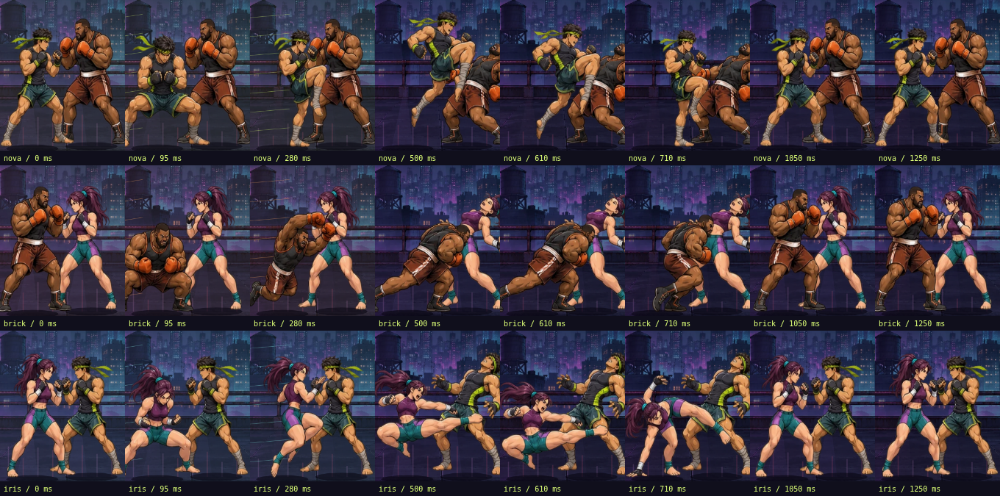

NOVA, BRICK и IRIS: 108 рисованных кадров, девять комбинаций, три суперудара и двенадцать интерактивных уроков. Видимая анимация использует целые иллюстрации, без процедурного скелета.
Обычная скорость со звуком и 0,5× без звука. Это поставленный контрольный показ Chromium: противник не атакует, заряд супера заранее заполнен. Звуковая дорожка восстановлена из событий тем же игровым аудиодвижком и совмещена с кадрами. Это не запись живого игрока или Android.
Три супера, восемь промежуточных фаз каждого. Полный размер.

NOVA — 36 кадров · BRICK — 36 кадров · IRIS — 36 кадров. Оригинальные изображения созданы генератором иллюстраций специально для игры; исходники и воспроизводимая нарезка сохранены в Git. Это не заявление о ручной покадровой работе художника.
Три разных оригинальных синтезированных эффекта подготовки и попадания. Человеческих голосовых записей здесь нет.
Сохранённая оригинальная аранжировка AFTERHOURS: уровни 1 → 2 → 3 → 4 → 5, затем обратное затухание. Музыка не перезапускается при изменении энергии или суперударе.
10 294 проверки правил: все девять рецептов, общий префикс, неверный ввод, заряд/броня/единственный контакт суперов, полные уроки каждым бойцом и бои с активным ИИ. На сложности «Мастер» стратегия чтения угроз побеждает всеми героями, повтор одной серии проигрывает. Это проверка правил, не доказательство субъективной увлекательности.
113 браузерных проверок: реальные сенсорные нажатия, девять комбо, три супера, блок/уход/контра, урок/сохранение прогресса, звук/пауза/музыкальные слои, шесть размеров экрана в дуэли и обучении. Ошибок JavaScript не обнаружено.
Правила / обучение / стратегии · Браузер / размеры / звук · Параметры контрольной записи
Все три отчёта относятся к одному SHA-256 игрового HTML. Архивная проверка длины костей сохранена для старого rig; анатомия рисованных кадров проверяется визуально. Физический Android, аппаратная задержка и расход батареи не проверялись. Основная BREAKLINE сохранена отдельно.